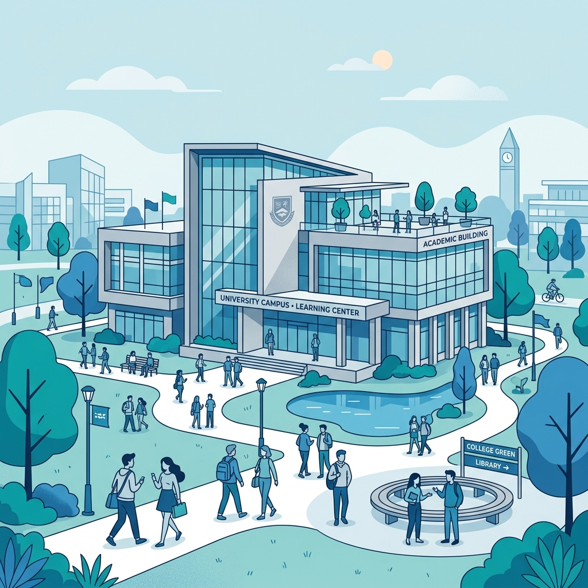

Welcome to Apex Institute of Technology
Apex Institute of Technology is a leading engineering and technology institution dedicated to providing a transformative learning experience. Established in 2010, the institute has earned a reputation for academic quality, research initiatives, and strong industry partnerships.
Our campus features state-of-the-art laboratories, modern classrooms, and an extensive digital library to foster innovation. We offer a range of undergraduate programs designed to equip students with practical skills, critical thinking, and professional leadership attributes.
Why Choose Apex?
- Accredited Programs: All engineering and technical programs are approved and accredited by national boards.
- Industry Collaboration: Active MoUs with top technical firms, providing internships and placement opportunities.
- Experienced Faculty: Learn from professors with strong academic records and real-world industrial research experience.
- Dynamic Campus Life: Engage in tech clubs, cultural societies, sports programs, and entrepreneurship incubators.